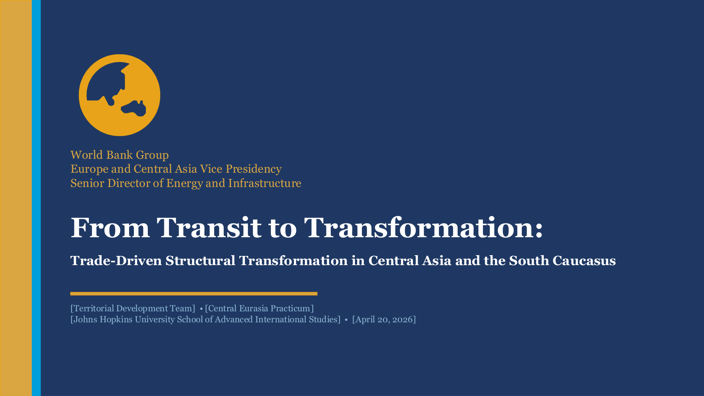
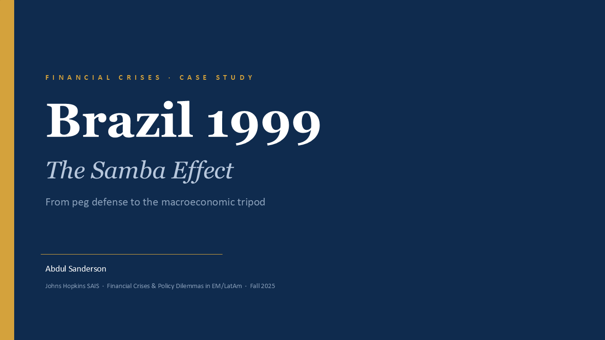
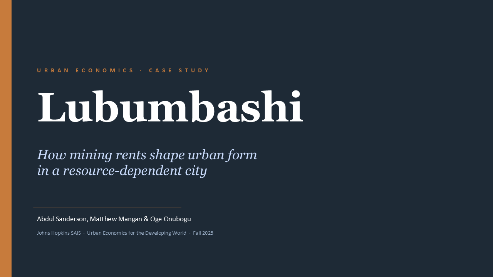
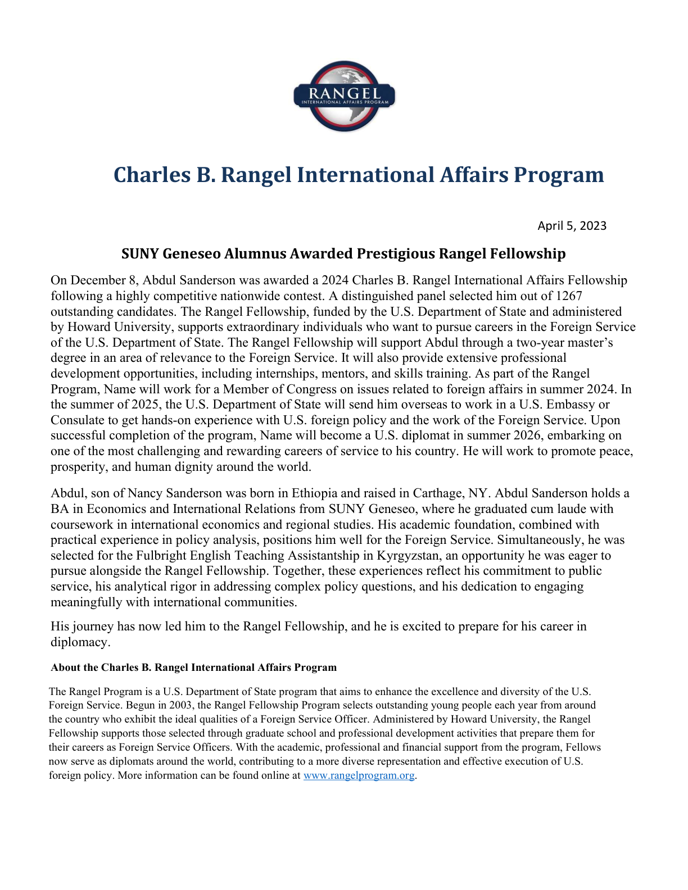
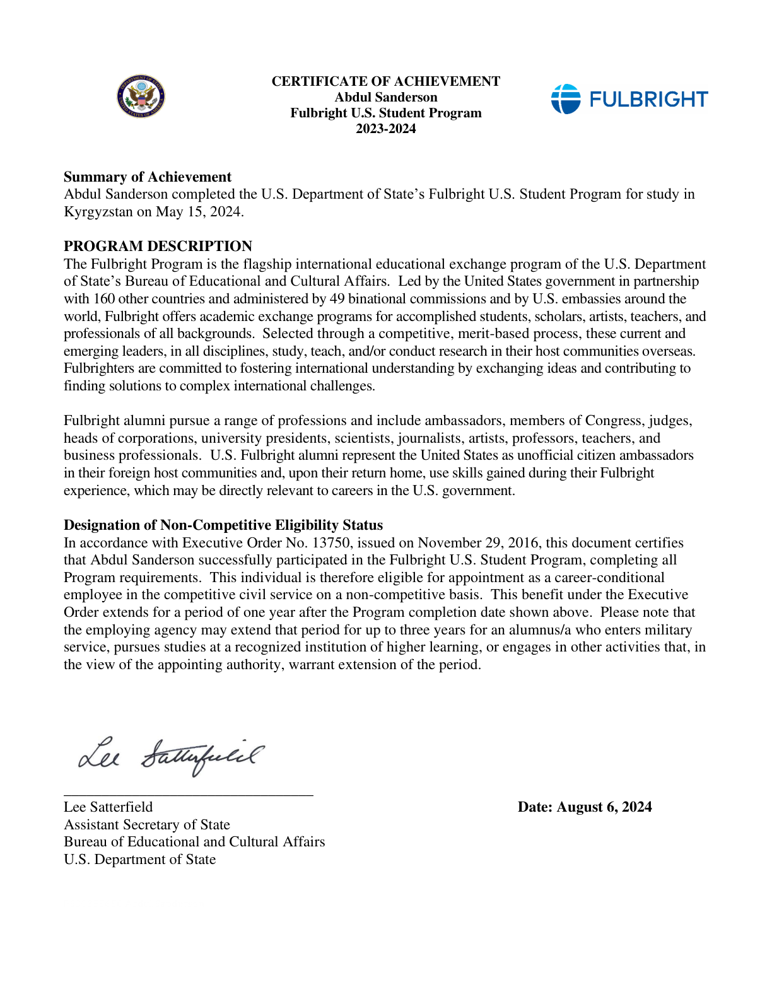
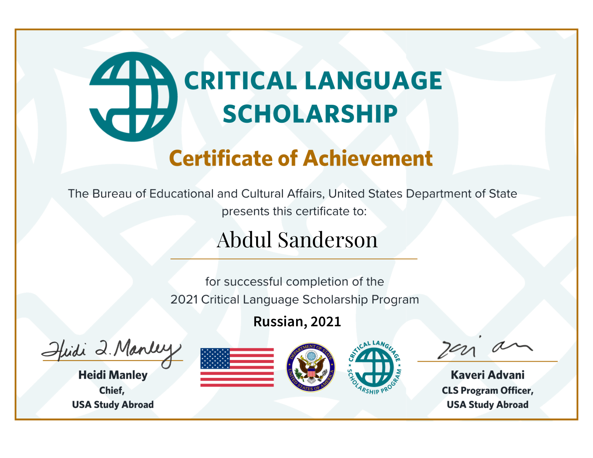
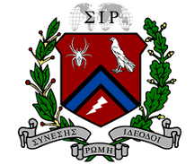
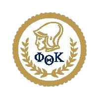

International Relations · Data Analytics · Diplomacy
Abdul Sanderson
Rangel Fellow and Johns Hopkins SAIS graduate with expertise in international economics, data analytics, and diplomatic engagement. Fulbright alumnus with experience across Central Asia, Capitol Hill, and U.S. embassies. Fluent in Russian and Spanish.

Background
About
Abdul Sanderson is a Charles B. Rangel International Affairs Fellow pursuing a Master of Arts in International Relations at the Johns Hopkins School of Advanced International Studies (SAIS), focusing on International Economics and Finance with a regional concentration on the Americas and Europe & Eurasia. He holds a B.A. in Economics and International Relations from SUNY Geneseo, graduating cum laude.
His career spans economic analysis, diplomacy, and education — from drafting policy memos at the U.S. Embassy in Ashgabat, Turkmenistan, to serving as a Fulbright English Teaching Assistant in Kyrgyzstan, to conducting regulatory cost analysis at Industrial Economics, Inc. He brings skills in GIS, Tableau, Excel, R, and four languages (English, Russian, Spanish, Kyrgyz) to his work in economic diplomacy and international development.
Education
Academic Background

GPA: 3.59 · International Economics & Finance · Americas, Europe & Eurasia
Selected Coursework

GPA: 3.56 · Dean's List · Sigma Iota Rho · Study Abroad: Université de Fribourg
Selected Coursework

GPA: 4.0 · President's List · Phi Theta Kappa (Chapter President)
Selected Coursework
Experience & Education
Scroll to travel ↓
1 / 8
North America
Watertown,
New York
43°58′N 75°54′W
2015
2015 – 2017
A.A. Humanities & Social Sciences
SUNY Jefferson Community College
Graduated with High Honors (GPA 4.0), President’s List every semester. Served as Chapter President of Phi Theta Kappa Honor Society — the world’s largest two-year college honor society. This foundation in humanities and social sciences set the course for a career in international affairs.
North America
Geneseo,
New York
42°47′N 77°48′W
2017
2017 – 2020
B.A. Economics & International Relations
SUNY Geneseo — Cum Laude
Dean’s List, GPA 3.56. Member of Sigma Iota Rho International Honor Society and Chapter Vice President of Alpha Kappa Psi Business Fraternity. Completed a semester abroad at the Université de Fribourg in Switzerland. Graduated cum laude with a rigorous double major in quantitative economics and international relations.
Europe
Fribourg,
Switzerland
46°48′N 7°09′E
2019
Spring 2019
Study Abroad — International Economics
Université de Fribourg
Spent a semester studying international economics and French at one of Switzerland’s bilingual universities, situated at the linguistic border between German and French-speaking Switzerland. Deepened both analytical knowledge in European economic policy and language proficiency in French within a multilingual academic environment.
North America
Cambridge,
Massachusetts
42°22′N 71°06′W
2022
2022 – 2023
Research Analyst
Industrial Economics, Inc.
Compiled data and developed methodologies for regulatory cost-benefit analysis. Delivered 13 research products for federal, state, NGO, and IGO clients across environmental and economic policy domains. Built deep expertise in regulatory economics and quantitative impact assessment working alongside senior economists on EPA, USDA, and international development projects.
Central Asia
Naryn,
Kyrgyzstan
41°25′N 76°00′E
2023
2023 – 2024
Fulbright English Teaching Assistant
U.S. Department of State
Taught English classes and conversation clubs at a university in Naryn, Kyrgyzstan — one of the country’s most remote provincial capitals in the Tian Shan mountains. Served as a U.S. citizen diplomat through cultural and educational engagement across the country, building cross-cultural communication skills and deep area knowledge of Central Asia.
North America
Washington,
D.C.
38°53′N 77°02′W
2024
May – Aug 2024
Congressional Fellow
Office of Rep. Paul D. Tonko — U.S. House of Representatives
Coordinated with 50 congressional offices to secure bill cosponsors on energy and environment legislation. Composed 45 constituent position letters addressing key issues in energy policy, foreign affairs, and environmental regulation. Developed skills in legislative process, multi-stakeholder engagement, and rapid policy communication under real legislative deadlines.
Central Asia
Ashgabat,
Turkmenistan
37°57′N 58°19′E
2025
Jun – Aug 2025
Fellow — Political-Economic Section
U.S. Embassy Ashgabat — U.S. Department of State
Drafted policy memos, analytical reports, and a comprehensive country assessment for a Deputy Assistant Secretary. Reported on economic issues including investment conditions, energy sector dynamics, and regional trends affecting U.S. interests in Turkmenistan and Central Asia. Operated within the full-spectrum environment of a U.S. diplomatic mission.
North America
Washington,
D.C.
38°53′N 77°02′W
2024
2024 – 2026
Rangel Fellow — M.A. International Relations
Johns Hopkins SAIS — World Bank Territorial Development Program
Charles B. Rangel International Affairs Fellow pursuing an M.A. focusing on International Economics & Finance. Research Contributor to the SAIS–World Bank Territorial Development Program, developing evidence-based policy recommendations on soft infrastructure modernization across Central Asia and the South Caucasus for presentation to World Bank stakeholders.
Skills
Technical Proficiencies
Competency Profile
Geospatial & Mapping
Data Analysis
Visualization & Reporting
Policy Research
Languages
Portfolio
Featured Projects
 GIS
GIS
HCMC Sea Level Rise Analysis
Geospatial risk analysis of sea level rise impact on Ho Chi Minh City using DEM data and population projections.
View Project → Power BI
Power BI
Latin America Conflict & Cartel Violence Dashboard
Power BI dashboard analyzing 146K ACLED events and 130K fatalities across 17 selected Latin American countries, 2019-2024.
View Dashboard →
PolicyFrom Transit to Transformation: Central Asia
Policy presentation to the World Bank Territorial Development Team on trade corridor soft infrastructure across seven CASC countries.
View Project →
FinanceBrazil 1999: The Samba Effect
Case study of Brazil's 1999 currency crisis — from crawling-peg collapse to the macroeconomic tripod and V-shaped recovery.
View Project → GIS
GIS
NYC Population Density (2010)
Choropleth map of 2010 Census population density across NYC's Neighborhood Tabulation Areas.
View Project →
UrbanLubumbashi: Mining Rents & Urban Form
Case study examining how copper mining rents shape the spatial structure and labor markets of a resource-dependent city in the DRC.
View Project →Credentials
Fellowships & Honors

2023 Charles B. Rangel International Affairs Fellowship
U.S. Department of State
View certificate →
2023–2024 Fulbright U.S. Student Program
U.S. Department of State
View certificate →
2021–2022 Critical Language Scholarship (Russian)
U.S. Department of State
View certificate →
2021 Sigma Iota Rho International Honor Society
SUNY Geneseo
Learn more →
2018 Alpha Kappa Psi Professional Business Fraternity
SUNY Geneseo · Chapter Vice President
Learn more →
2016 Phi Theta Kappa Honor Society
SUNY Jefferson Community College · Chapter President
Learn more →